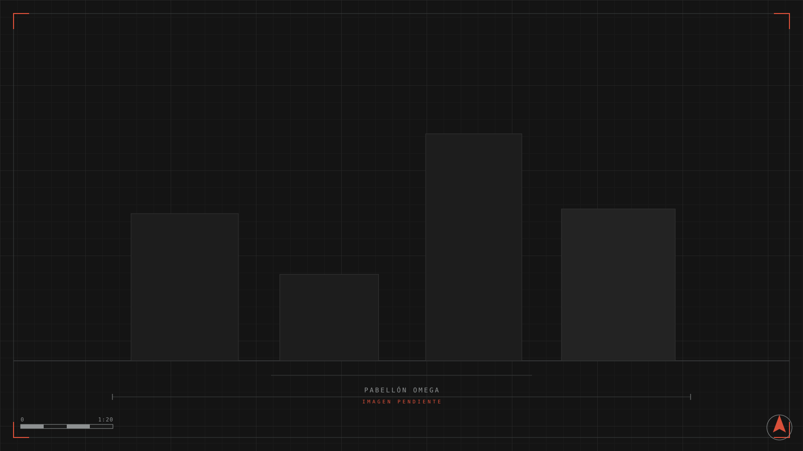
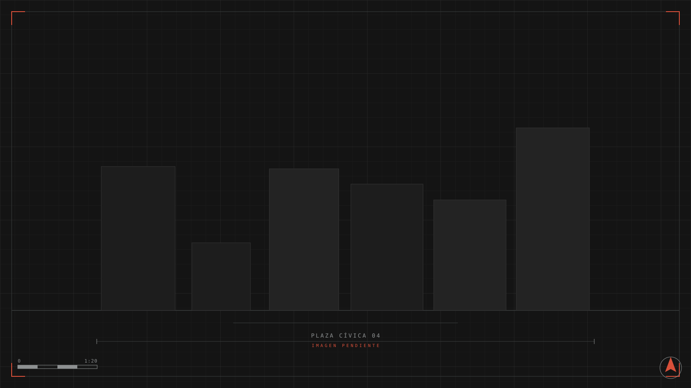
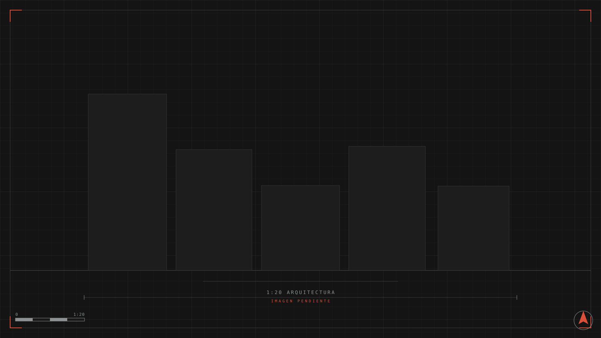

Pabellón Omega
Un centro cultural que es, ante todo, un techo: una gran cubierta en voladizo que define el límite entre el suelo urbano y el cielo, y que abriga un programa de salas, talleres y biblioteca.



- Ubicación
- Luque, Central
- Año
- 2024
- Estado
- Proyecto
- Superficie
- 2.800 m²
- Programa
- Centro cultural · Salas, talleres y biblioteca
Primero el techo
La cubierta reticular trabaja como un gran toldo estructural de treinta metros de luz: bajo ella, los programas cuelgan como piezas sueltas y el espacio intermedio queda libre para circulación, ferias y exposiciones al aire libre. El proyecto es austero en lo visible y generoso en lo que cubre.
Omega cierra el ciclo de nuestro programa cultural: mientras el Pabellón X investiga el encuadre, Omega define el cobijo. El conjunto dibuja una hipótesis para ciudades intermedias que necesitan equipamiento sin gesto.